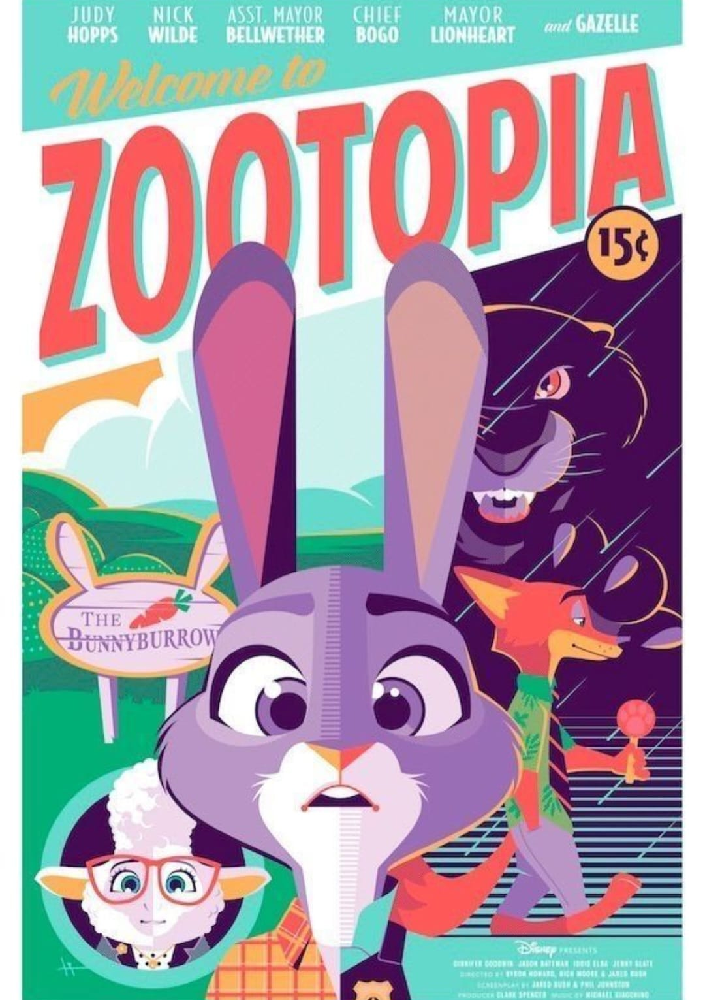
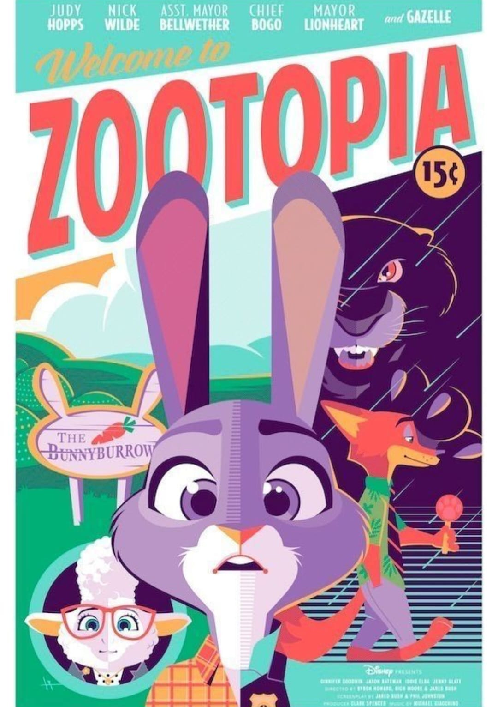

ANIMACIÓN 2D
La animación 2D es uno de los principales tipos de animación. Es ampliamente utilizada para crear películas animadas, dibujos animados, videos de marketing, anuncios, materiales educativos, videojuegos y mucho más. Con el aumento del contenido de video, cada vez más empresas consideran usar videos animados para promoción, ya que aumentan las tasas de conversión en un 20%. Algunas compañías contratan equipo de animación, otras intentan crearlas online con la ayuda de las herramientas de un creador de videos. Los videos animados tienen un gran impacto en la audiencia de tres maneras diferentes: visual, auditiva y cenestésica; además, pueden ser simplemente adorables. Este es un ejemplo de un video explicativo animado en 2D de MailChimp que presenta completamente la plataforma a través de la animación acompañada de música lúdica y una voz en off profesional.
¿Qué es la animación 2D?
La animación bidimensional o 2D se caracteriza por tener sus objetos y personajes creados en el espacio bidimensional. Significa que sólo tienen ancho y alto.Se considera un estilo de animación tradicional, conocido desde el siglo XIX. Inicialmente, se creó al juntar los fotogramas en los que un dibujo fue seguido por otro que difería ligeramente de él. Cada segundo incluye 24 fotogramas. Ahora, aprendamos más sobre cómo se crea la animación 2D. El proceso consta de 3 fases principales: preproducción, producción y postproducción. Veamos qué incluye cada uno de ellos.
¿Qué diferencia a una animación 2D de una 3D?
Aunque persigan un mismo objetivo, que es darle vida a un objeto, la animación 2D y 3D tienen sus diferencias. Gracias a distintos softwares, actualmente, pasamos del dibujo a mano a la digitalización de imágenes. Es por eso por lo que, a continuación, te hablaremos de los aspectos que diferencian a estas dos técnicas. Empecemos por la animación bidimensional o 2D, que se caracteriza por tomar en cuenta los siguientes elementos: Todo se mueve en un espacio plano de dos dimensiones: ancho y longitud. Se produce con base en dibujos de distintas poses y fotogramas de los personajes, efectos visuales y fondos. Los elementos se combinan en una secuencia única y al reproducirse juntos, en un tiempo determinado, crean el movimiento. En cuanto a la experiencia que brinda, esta animación ofrece imágenes menos realistas. En cambio, la animación 3D o tridimensional se distingue de la 2D por los aspectos que destacamos a continuación: Todo está construido con base en tres dimensiones: ancho, largo y alto (con volumen). Los personajes se modelan y animan a través de un ordenador, empleando programas o software específicos. El trabajo contempla un proceso de modelado, animación y renderizado que facilita la iluminación y los movimientos de cámara complejos. Además, la experiencia visual ayuda a crear el realismo y la percepción de profundidad. Hoy en día es posible combinar distintos tipos de animación. Si deseas aprovechar estos recursos para crear tus producciones audiovisuales. No te pierdas estos trucos y crea tu animación 2D como todo un profesional.

Los Principios de la Animación
Existen 12 principios de la animación creados por los veteranos de Walt Disney: Frank Thomas y Ollie Johnston. Si alguna vez has visto una película o episodio de una caricatura y sientes que algo se ve raro de cómo se mueven los personajes, es muy probable que sea porque no aplicaron muy bien algo de lo siguiente:
Estirar y Encoger La finalidad de este principio es dar la sensación de flexibilidad y peso al objeto
Anticipación Como el nombre lo dice, es el anticipo de las acciones que se van a presentar y así se vean más convincentes al espectador.
Puesta en Escena El objetivo de este principio es mantener la atención en lo que es importante que la gente vea, para lograrlo se usan diversas técnicas de luz y sombra, la posición de la cámara y de los personajes en la toma entre otras.
Animación Directa y Pose a Pose Hay dos tipos de animación, la animación directa es dibujar la acción cuadro por cuadro de principio a final, el método de pose a pose es primero dibujar las posiciones clave y después rellenar los intermedios entre estas las poses con más dibujos.
Acción Complementaria y Acción Superpuesta Estos principios sirven para que los movimientos se vean más naturales. La acción complementaria es cuando objetos ajenos a los del cuerpo del personaje se mueven a diferentes tiempos, por ejemplo, si un Batman está corriendo por un callejón y se detiene, la capa que trae puesta se debe seguir moviendo a pesar de que Batman se haya detenido. La acción superpuesta es el movimiento del cuerpo a diferentes tiempos, retomando el ejemplo de Batman, las piernas, los brazos y su cabeza se estarán moviendo diferente, esto para evitar que parezca un robot.
Acelerar y Desacelerar Como el nombre lo dice, esta técnica se basa en que se sienta la existencia de la aceleración y la desaceleración, esto se logra haciendo más dibujos al inicio y final de las acciones dejando la mitad con menos dibujos y enfatizando más estas poses.
Arcos El objetivo de los arcos es eliminar la rigidez de los cuerpos, a menos que se busquen movimientos mecánicos. Todas las actividades tienen un arco el cual hace más fluidos las acciones. Acción Secundaria Este principio se basa en dar cosas extra al personaje mientras hace otras acciones para reflejar dichas emociones, un ejemplo sería que este mascando chicle o silbando mientras esté caminando.
Timing Este es sencillo ya que solo se refiere a la cantidad de dibujos que se harán para la acción, si queremos que algo se sienta pesado y lento se harán más dibujos, de lo contrario se harán menos. Se deben combinar ambos para vender la sensación de dramatismo, por ejemplo, en las peleas de la mayoría de los animes existen pocos dibujos para mostrar cuando se están moviendo a gran velocidad, pero cuando quieren mostrar que un golpe es muy fuerte y potente le agregan muchos dibujos y detalles a esas partes.
Exageración Este apartado depende mucho del estilo con el que se esté animando, ya que trata sobre hacer dibujos extremos de expresiones o movimientos corporales, un ejemplo muy claro son los Looney Toons y como suelen estirarse para mostrar más las acciones.
Dibujo Sólido El objetivo del dibujo sólido es entender la anatomía y constitución del objeto o personaje que se esté animando, lograr transmitir sus características mediante el uso de luces, sombras, volumen, etc…
Atractivo Quiere decir saber comunicar los rasgos físicos del personaje para que concuerden con su personalidad, este apartado depende totalmente de cómo creemos a nuestros personajes. El canal de YouTube Mirball School tiene un video que explica gráficamente cada uno de estos principios y lo hace muy bien, te lo recomiendo.

 

La Animación 2D en la Actualidad
El estado de la animación 2D depende totalmente de la región de la que hablemos, por ejemplo en Japón aún hay estudios que hacen dibujos de manera tradicional. En este país el 2D digital o tradicional es sin duda el método más popular para hacer animaciones, el 3D apenas se está incorporando en sus flujos de trabajo pero no lo hace de manera que vaya a reemplazar al 2D, claro que hay series o películas hechas totalmente en 3D. Como ejemplo tenemos a Land of the Lustrous, Knights of Sidonia o la próxima película de Ghibli Aya and the Witch; pero por otro lado tenemos propuestas como la película de Trigger Promare la cual es una combinación de 2D con 3D y es algo que funciona. Del lado de Europa también es algo parecido a Japón, existen obras exitosas en 3D como Miraculous Ladybug, pero el 2D ha tenido un resurgimiento importando y prueba de esto son las películas I Lost My Body y claro, la galardonada Klaus. En I Lost My Body se hizo toda la película en 3D, pero fue para tener referencias de movimientos y espacios ya que al final la película fue en 2D, Klaus es una película española que parece estar hecha en 3D pero está totalmente en 2D, lo que vende este efecto es el cómo se hizo la iluminación de los escenarios y los personajes.